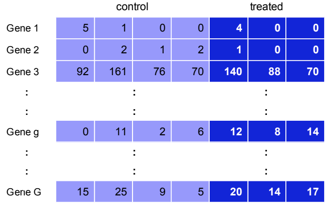
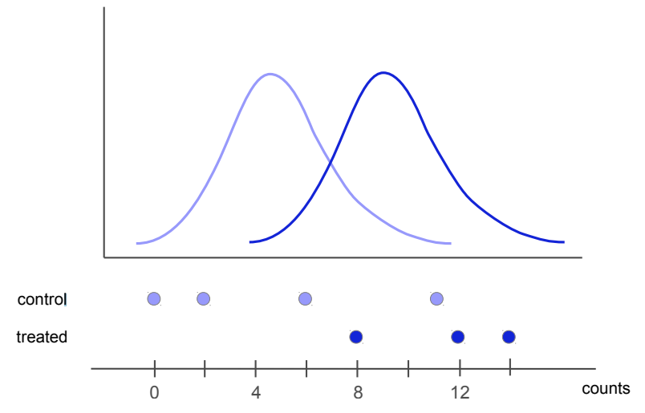
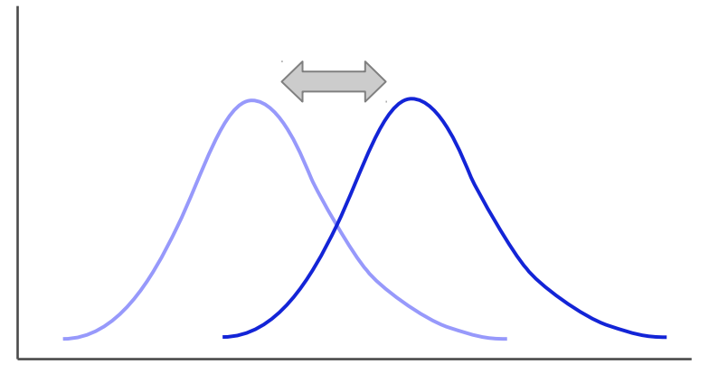
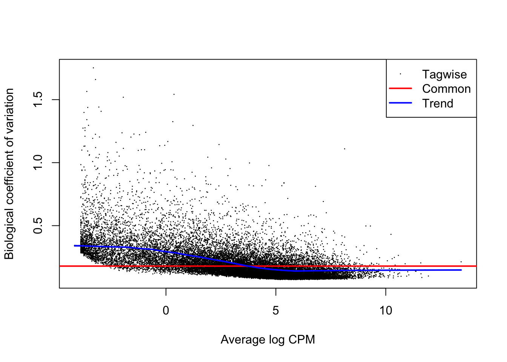
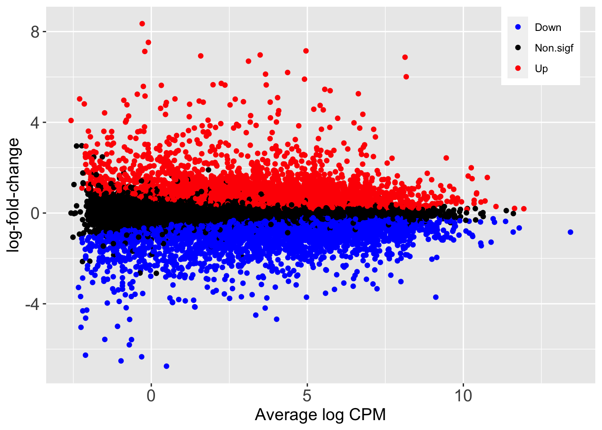
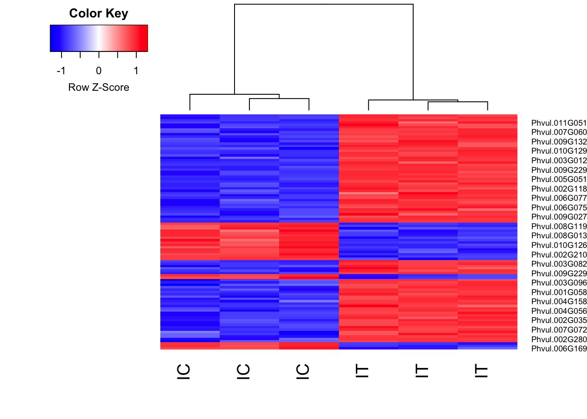

The goal of differential gene expression analysis is to determine if the change in expression — for each gene independently, in different conditions — is statistically significant. To achieve this, we will fit a statistical model to expression data of each gene and perform hypothesis tests. Our goal is to determine if a gene is differentially expressed upon salt treatment, while adjusting for any changes that might arise due to the effect of location (inland and beach).
The idea of hypothesis testing is that:
We formalize a hypothesis — \(H_A\), the alternative hypothesis — into a statement, such as: gene g is differentially expressed between the conditions
Collect appropriate data


A typical analysis involves fitting regression models. These can take the form of:
\(Y = \beta_0 + \beta_1 X_1+ \epsilon\), where
We will fit a multiple linear regression model, specifically an additive model, that includes an extra term of location, \(X_2\), since we are interested in changes of expression after adjusting for any changes due to location.
The additive model will take the form of: \(Y = \beta_0 + \beta_1 X_1 + \beta_2 X_2 + \epsilon\)
Note that in this workshop we fit a negative binomial (NB) model to read counts, hence the need for a Generalized linear model (GLM). GLMs are an extension of classical linear models to non-normally distributed response data.
Why do we use the NB distribution for analysis of RBA-Seq data? * Reads are count based, they can’t be normally distributed * Two distributions for count based data are poisson (which presumes the variance and mean [of expression] are equal; or NB (which does not). The low number of bilogical replocates results in variance not being equal to mean, hence the need for NB distribution. A good estimate of variance for each gene is essential to determine whether the changes are due to chance.

We first create a design matrix for the linear models. A design matrix represents the independent variables/factors that have an influence in the response variable (gene expression), and also the way we have coded the information and the design of the experiment. There are many ways of creating the design matrix, but the most important thing to remember is that the biological question determines how the matrix is created, and subsequently how we frame hypothesis tests. In this analysis we wish to test whether — for each gene — the expression differs significantly between plants treated with salt and water control, after adjusting for differences between land and beach. In statistical terms, this is an additive linear model, and will be reflected in the design matrix. This type of additive model corrects/adjusts for baseline differences between locations.
Let us first load required packages.
library(edgeR) #Main package for DE analysis## Loading required package: limmalibrary(tidyverse) #Data wrangling package, includes ggplot2, dplyr, tidy, readr## ── Attaching packages ─────────────────────────────────────── tidyverse 1.3.1 ──## ✓ ggplot2 3.3.3 ✓ purrr 0.3.4
## ✓ tibble 3.1.1 ✓ dplyr 1.0.6
## ✓ tidyr 1.1.3 ✓ stringr 1.4.0
## ✓ readr 1.4.0 ✓ forcats 0.5.1## ── Conflicts ────────────────────────────────────────── tidyverse_conflicts() ──
## x dplyr::filter() masks stats::filter()
## x dplyr::lag() masks stats::lag()library(RColorBrewer) #Colour scheme for plotting
library(Glimma) #Interactive MD plots
library(gplots)##
## Attaching package: 'gplots'## The following object is masked from 'package:stats':
##
## lowessThen load the original copy of the DGEList object from the previous analysis to the current R environment.
dge<-readRDS("dge_orig.rds")
lcpm <- cpm(dge, log=TRUE)If you do not have the “dge_orig.rds” in your local directory from previous analysis, download the object from a public repository as shown below (remember to remove the comments #):
#download.file(url="https://ndownloader.figshare.com/files/24103316", destfile = "test.rds")
#dge<-readRDS("dge_orig.rds")
#lcpm <- cpm(dge, log=TRUE)Note that for a multivariate model, all combinations of treatments/group should be replicated in the second variable/factor. That is, we should have Control (C) and Treatment (T) samples in both inland and beach.
We create a design matrix using the model.matrix function.
group<-as.factor(rep(c("C","T","C","T"), c(3,3,3,3)))
#make control the reference level
#group<-relevel(group,"C")
location<-as.factor(rep(c("inland","beach"),c(6,6)))
#We make "inland" the reference level
location<-relevel(location,"inland")
#Create the design matrix, with intercept
#The order matters: our factor of interest LAST
mod <- model.matrix(~ location + group)
#With intercept:
#mod <- model.matrix(0 + location + group)
#Rename rows of the model to correspond to sample names
rownames(mod) <- colnames(dge)Let us take a look at the model:
mod## (Intercept) locationbeach groupT
## IC3 1 0 0
## IC1 1 0 0
## IC2 1 0 0
## IT2 1 0 1
## IT1 1 0 1
## IT3 1 0 1
## BC2 1 1 0
## BC3 1 1 0
## BC1 1 1 0
## BT1 1 1 1
## BT2 1 1 1
## BT3 1 1 1
## attr(,"assign")
## [1] 0 1 2
## attr(,"contrasts")
## attr(,"contrasts")$location
## [1] "contr.treatment"
##
## attr(,"contrasts")$group
## [1] "contr.treatment"We see three coefficients, sometimes called “dummy variables or indicator functions”. The last coefficient (coefficient 3, groupT) representing the effect of treatment on gene expression, after adjusting for differences due to location. This is our coefficient of interest. This coefficient of the indicator variable ‘groupT’ is the difference between the mean gene expression value of the indicated category (groupT = 1, i.e treatment level) and the mean gene expression values for the other category (groupT = 0, i.e control level), at fixed values of the other explanatory variable, i.e location.
Notice how indicator variables take on values of either 0 or 1. For instance, ‘groupT’ takes on a value of 1 if the sample is treated, otherwise 0.
The ‘Intercept’ coefficient represents the (average) baseline expression at inland location.
The number/count of reads \(K_g\) for a gene \(g\) are commonly modeled with the Poisson distribution \(K_g ∼ Pois(λ_g)\), whose mean and variance are both equal to \(λ_g\). Due to heterogeneity (difference between replicates), the variance is often much larger than the mean, making the Poisson assumption not realistic. A negative binomial distribution — an approximation of the Poisson distribution where the variance is allowed to exceed the mean — is preferred, hence the need to estimate an overdispersion parameter \(φ_g\) that arises. The variance of read counts for a gene then becomes \(Var(K_g) = λ_g + φ_gλ^2_g\). We estimate the overdispersion parameter using the estimateDisp function.
dge2 <- estimateDisp(dge, design = mod)We then plot the biological coefficient of variation (BCV). BCV is the coefficient of variation (CV) with which the (unknown) true abundance of the gene varies between replicate RNA samples. It represents the CV that would remain between biological replicates if sequencing depth could be increased indefinitely. The BCV is the square root of the negative binomial dispersion.
plotBCV(dge2)
We fit a negative binomial GLM to the read counts for each gene, using the edgeR glmFit function.
fit <- glmFit(dge2, mod)We determine differential expression by performing a likelihood ratio test (LRT) using the edgeR’s glmLRT function. LRTs are used to compare a null model \(m_O\) to an alternative model \(m_A\), such that \(m_O\) is nested in \(m_A\).
In a univariate simple linear regression example:
\(Y = \beta_0 + \beta_1X\)
The null model \(m_O\) becomes:
\(H_O: Y = \beta_0\)
The alternative model \(m_A\) becomes:
\(H_A: Y = \beta_0 + \beta_1X\)
A LRT determines whether \(\beta_0\) alone can explain the change in \(Y\) without the need for \(\beta_1\), hence the null hypothesis that the smaller model is the “best” model.
Mathematically, the LRT statistic is defined by:
\(LRT=-2ln\left(\displaystyle \frac{\hat\theta_O|X}{\hat\theta_A|X}\right)\), where:
The LRT statistic is then compared to a \(\chi^2\) distribution with degrees of freedom equal the difference in the number of parameters for the two models.
Before identifying DEGs in salt treatment (using LRT), we first check whether there was a genuine need to adjust for location. We do this by testing differential expression between the two locations. The intercept coefficient term specifies the average baseline expression for inland, while coefficient 2 (locationbeach) corresponds to “offset” relative to inland, i.e the effect of beach. The goodness-of-fit LRT compares the reduced model with one predictor (Intercept only, null hypothesis) with larger model having two predictors (Intercept and locationbeach).
#LRT: inland Vs beach
glf_B_vs_I <-glmLRT(fit, coef = 2)
#extract most DEGs
topTags(glf_B_vs_I)[[1]][,7:11]The result of the columns is a follows:
We observe a number of DEGs between beach and inland, hence need to adjust for that effect since we are interested in the treatment effect.
Next, we perform LRT to obtain DEGs for the treatment effect, adjusting for location differences.
#LRT
glf_T_vs_C <-glmLRT(fit, coef = 3)Since we are fitting one model for each gene of interest, and therefore performing thousands of tests, we run into an issue where the Type I error is not equal to the significance level of each test. We try to fix this by performing multiple test correction, also known as adjusting P values. See Jafari & Ansari-Pour., 2018 for a review of different methods of adjusting P values.
Some of the methods for adjusting p values include:
Let us first interrogate the top DEGs:
topTags(glf_T_vs_C)## Coefficient: groupT
## Geneid Chr Start End Strand Length logFC
## 9569 Phvul.004G056400.v1.0 Chr04 7396606 7397508 - 903 6.119634
## 17196 Phvul.007G231800.v1.0 Chr07 47146783 47148189 - 1407 5.119555
## 21686 Phvul.009G106400.v1.0 Chr09 16017975 16023446 + 5472 -2.665181
## 2632 Phvul.001G263200.v1.0 Chr01 51729773 51729982 + 210 5.091628
## 5498 Phvul.002G280400.v1.0 Chr02 44427703 44428818 - 1116 6.250393
## 20898 Phvul.009G027600.v1.0 Chr09 6151941 6152698 + 758 5.665508
## 15887 Phvul.007G100900.v1.0 Chr07 10966196 10970519 - 4324 2.496623
## 20965 Phvul.009G034300.v1.0 Chr09 7372885 7373614 + 730 -4.379391
## 3800 Phvul.002G110600.v1.0 Chr02 22492109 22493173 + 1065 3.899224
## 22302 Phvul.009G168000.v1.0 Chr09 24532274 24533798 + 1525 5.785088
## logCPM LR PValue FDR
## 9569 4.370175 1116.0744 1.059813e-244 2.882374e-240
## 17196 6.641357 806.1278 2.510605e-177 3.414046e-173
## 21686 6.519445 695.4608 2.902632e-153 2.631429e-149
## 2632 4.077005 671.6537 4.364981e-148 2.967859e-144
## 5498 2.352673 633.0100 1.107065e-139 6.021769e-136
## 20898 5.731779 632.0508 1.789766e-139 8.112711e-136
## 15887 5.403144 609.1785 1.688195e-134 6.559119e-131
## 20965 4.006566 572.7380 1.424735e-126 4.843564e-123
## 3800 2.637592 561.7387 3.518792e-124 1.063340e-120
## 22302 2.247885 528.0753 7.407530e-117 2.014626e-113We then obtain all the DEGs with adjusted P value cutoff of 0.1
pvals_T_vs_C<-topTags(glf_T_vs_C, n = "Inf", adjust.method = "BH", sort.by = "PValue", p.value = 0.1 )
#subset to get the dataframe from the edgeR object
pvals_T_vs_C<-pvals_T_vs_C[[1]] Next, count genes with adjusted P value of less than or equal to 0.1 (i.e FDR <= 0.1). We will use the data wrangling package dplyr, which is included in tidyverse package.
We first obtain the top 10 genes, with FDR cutoff of 0.1
pvals_T_vs_C %>%
dplyr::filter(FDR <= 0.1) %>%
head(10)We can also interrogate bottom DEGs. Note that the FDR cutoff of 0.1 falls within the raw P value of 0.05, corresponding to the an adjusted Type I error.
pvals_T_vs_C %>%
dplyr::filter(FDR <= 0.1) %>%
tail()We now obtain the total number of DEGs with FDR cutoff of 0.1
pvals_T_vs_C %>%
filter(FDR <= 0.1) %>%
count() Learning Check!
- How many genes are DE with FDR <=0.1 using Bonferroni method? Which of the two methods (BH Vs Bonferroni) seem to be more stringent?
Get number of up and down regulated genes:
dt<-decideTests(glf_T_vs_C, adjust.method = "BH", p.value = 0.1)
summary(dt)## groupT
## Down 5360
## NotSig 15880
## Up 5957We then make a scatter-plot showing the DEGs
#create a dataframe with 'sign' column showing Up, Down, or Non.sig
sign.dat<-glf_T_vs_C$table %>%
dplyr::mutate(sign=case_when(logFC>0 & PValue < 0.05 ~ "Up",
logFC<0 & PValue < 0.05 ~ "Down",
PValue > 0.05 ~ "Non.sigf")
)
head(sign.dat)ggplot(sign.dat, aes(x = logCPM, y=logFC,col=sign)) +
# geom_point(alpha=0.4) +
geom_point() +
scale_colour_manual(values=c("blue","black","red")) +
labs(x = "Average log CPM", y = "log-fold-change") +
theme(legend.position = c(0.9, 0.9), legend.title = element_blank()) +
theme(
axis.title.x = element_text(size=14),
axis.title.y = element_text(size=14),
axis.text.x = element_text(size = 14),
axis.text.y = element_text(size = 14)
)
We can create an interactive MD plot using the glmMDplot function from Glimma package:
glMDPlot(glf_T_vs_C , coef=3, status=dt, #main=colnames(glf_Inland_T_vs_Inland_C)[1],
side.main="Geneid", counts=lcpm, groups=group, launch=TRUE)Heatmap of the top 100 DE genes
#install.packages("gplots")
library(gplots)
tr.vs.utr.topgenes <- pvals_T_vs_C$Geneid[1:100] #get IDS of top DEGs
i <- which(dge$genes$Geneid %in% tr.vs.utr.topgenes) #Get their index in the expression table
mycol <- colorpanel(1000,"blue","white","red")
heatmap.2(lcpm[i,], scale="row",
labRow=dge$genes$Geneid[i], labCol=rownames(dge$samples),
col=mycol, trace="none", density.info="none", dendrogram="column")
As expected, we observe two main clusters, wherein samples are group based on on treatment and control. Additionally, all biological replicates are clustered together.